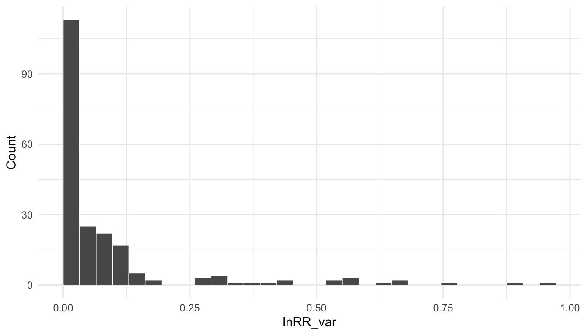
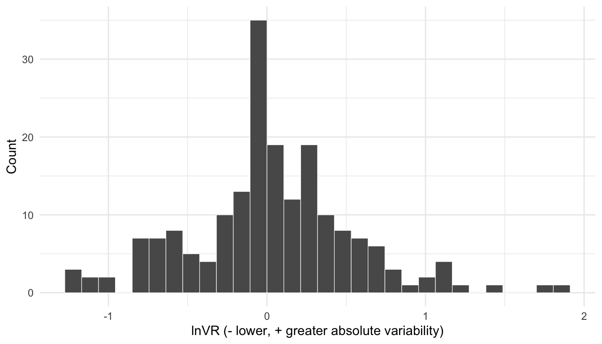
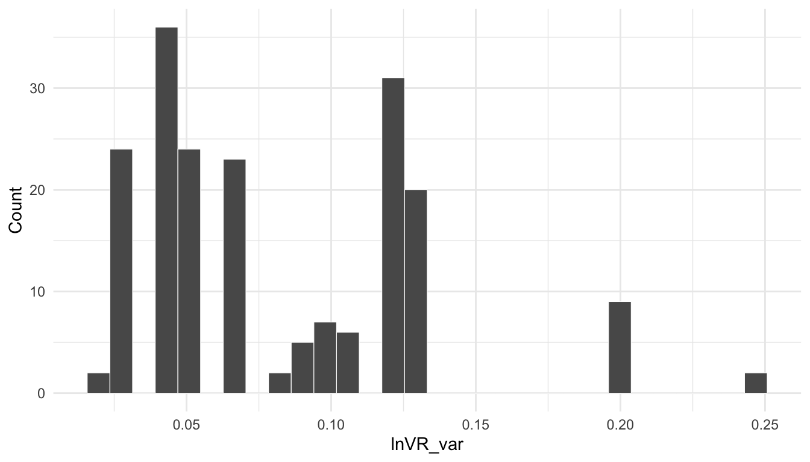
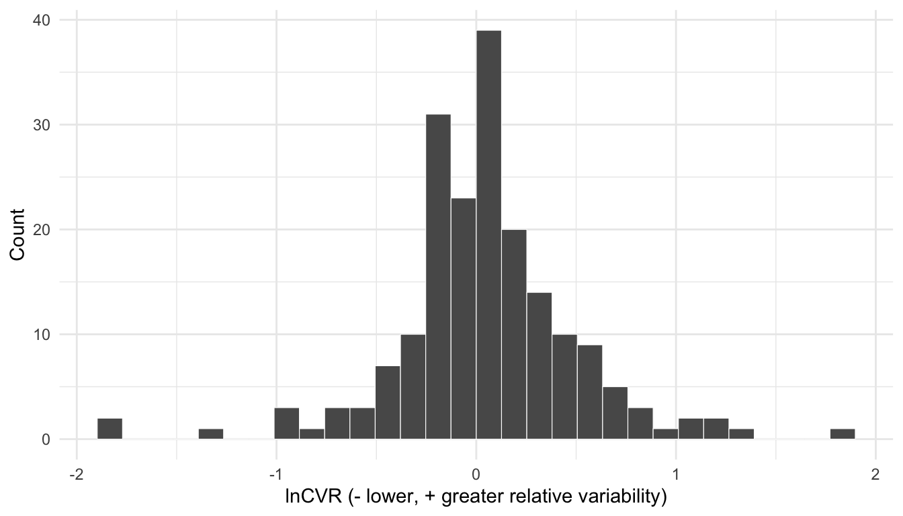
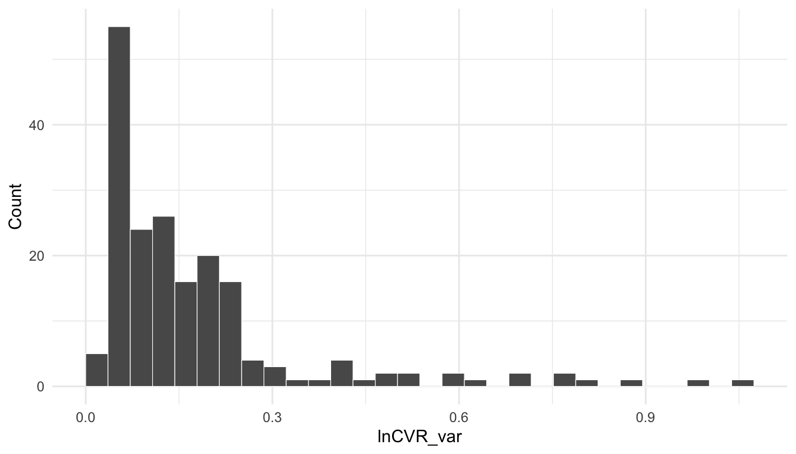

pacman::p_load(
dplyr,
ggplot2,
knitr,
metafor,
readr,
tibble,
tidyr
)
project_root <- normalizePath("..", mustWork = TRUE)
derived_dir <- file.path(project_root, "Data", "derived")
# Load the analysis-ready database.
db <- readr::read_csv(
file.path(derived_dir, "PCN_analysis_ready.csv"),
show_col_types = FALSE
)Effect size calculation
We load the analysis-ready database from the preceding chapter and calculate three effect sizes: the log response ratio (lnRR), log variability ratio (lnVR), and log coefficient of variation ratio (lnCVR). We also calculate the sampling variance of each effect size.
lnRR
The log response ratio (lnRR) compares the mean outcome in the prenatal-noise group with the control group.
The bias-corrected lnRR is:
\[ \ln RR = \ln\left(\frac{M_T}{M_C}\right) + \frac{1}{2} \left( \frac{SD_T^2}{N_T M_T^2} - \frac{SD_C^2}{N_C M_C^2} \right), \]
where \(M\), \(SD\), and \(N\) are the mean, standard deviation, and sample size for the exposed (\(T\)) and control (\(C\)) groups (Hedges et al. 1999; Lajeunesse 2015).
lnVR
The log variability ratio (lnVR) compares the standard deviation of the prenatal-noise treatment group with the standard deviation of the control group. We use it to measure absolute variability.
The bias-corrected lnVR is:
\[ \ln VR = \ln\left(\frac{SD_T}{SD_C}\right) + \frac{1}{2} \left( \frac{1}{N_T-1} - \frac{1}{N_C-1} \right). \]
A positive lnVR indicates greater absolute variability in the treatment group, while a negative lnVR indicates lower absolute variability (Nakagawa et al. 2015).
lnCVR
The log coefficient of variation ratio (lnCVR) compares variability relative to the group mean. We first define the coefficient of variation as \(CV = SD/M\).
The bias-corrected lnCVR is:
\[ \ln CVR = \ln\left(\frac{CV_T}{CV_C}\right) + \frac{1}{2} \left( \frac{1}{N_T-1} - \frac{1}{N_C-1} \right) - \frac{1}{2} \left( \frac{SD_T^2}{N_T M_T^2} - \frac{SD_C^2}{N_C M_C^2} \right). \]
A positive lnCVR indicates greater relative variability in the treatment group, while a negative lnCVR indicates lower relative variability (Senior et al. 2020).
NoteVariable definitions
| Variable | Definition |
|---|---|
c_mean, c_sd, c_n |
Control-group mean, standard deviation, and sample size. |
ex_mean, ex_sd, ex_n |
Exposed-group mean, standard deviation, and sample size. |
data_type |
Scale of the extracted outcome, including percentage outcomes. |
assay_type |
Behavioural test or assay. |
measurement_variable |
Behavioural variable reported for the assay. |
data_units |
Units of the reported measurement. |
comparison_structure |
Indicates an independent- or dependent-group comparison. |
higher_better |
Indicates whether a higher outcome value represents better performance. |
lnRR |
Bias-corrected log response ratio. |
lnRR_var |
Sampling variance of lnRR. |
lnVR |
Bias-corrected log variability ratio. |
lnVR_var |
Sampling variance of lnVR. |
lnCVR |
Bias-corrected log coefficient of variation ratio. |
lnCVR_var |
Sampling variance of lnCVR. |
Data preparation
Data types
- We calculate lnRR for every outcome. We apply an arcsine-square-root transformation before calculating lnRR for percentage outcomes.
- We calculate lnVR and lnCVR only for non-percentage outcomes. We exclude percentage outcomes because their bounded scale creates a mechanical relationship between the mean and variance.
Boundary corrections
- For non-percentage outcomes, we replace a zero mean with 0.9 times the smallest positive mean in the same outcome stratum.
- For all outcomes, we replace a zero SD with the smallest positive SD for the same treatment arm and outcome stratum.
- For percentage outcomes, we replace means of 0 and 100 with 0.5 and 99.5, respectively.
We define an outcome stratum with assay_type, measurement_variable, data_type, and data_units.
Comparison structure
- For independent comparisons, we use
ROM,VR, andCVRinmetafor::escalc(). - For dependent comparisons, we use
ROMC,VRC, andCVRCwith a within-subject correlation of 0.5.
Direction harmonisation
When higher_better == "yes", we multiply lnRR by -1 to keep the behavioural direction consistent across effect sizes. After this harmonisation, a positive lnRR represents more anxiety- or depression-like behaviour in the treatment group, while a negative lnRR represents less anxiety- or depression-like behaviour.
We do not reverse lnVR or lnCVR because standard deviations do not have an anxiety- or depression-like direction. For both variability metrics, positive values represent greater variability in the treatment group and negative values represent lower variability.
The following functions apply these rules while preserving the original row order.
# Return the smallest positive value in a vector.
minimum_positive <- function(x) {
x <- x[is.finite(x) & x > 0]
if (length(x) == 0) NA_real_ else min(x)
}
apply_zero_sd_corrections <- function(data) {
strata <- c("assay_type", "measurement_variable", "data_type", "data_units")
# Calculate the smallest positive SD within each outcome stratum and arm.
local_minima <- data |>
group_by(across(all_of(strata))) |>
summarise(
minimum_control_sd = minimum_positive(c_sd),
minimum_exposed_sd = minimum_positive(ex_sd),
.groups = "drop"
)
corrected <- data |>
left_join(local_minima, by = strata) |>
mutate(
c_sd_continuity_corrected = !is.na(c_sd) & c_sd == 0,
ex_sd_continuity_corrected = !is.na(ex_sd) & ex_sd == 0,
c_sd = if_else(c_sd_continuity_corrected, minimum_control_sd, c_sd),
ex_sd = if_else(ex_sd_continuity_corrected, minimum_exposed_sd, ex_sd)
)
if (any(corrected$c_sd_continuity_corrected & is.na(corrected$minimum_control_sd)) ||
any(corrected$ex_sd_continuity_corrected & is.na(corrected$minimum_exposed_sd))) {
stop("A zero SD has no positive SD in the same treatment arm and outcome stratum.")
}
corrected |>
select(-minimum_control_sd, -minimum_exposed_sd)
}
apply_nonpercentage_corrections <- function(data) {
strata <- c("assay_type", "measurement_variable", "data_type", "data_units")
# Calculate the smallest positive mean within each outcome stratum and arm.
local_minima <- data |>
group_by(across(all_of(strata))) |>
summarise(
minimum_control_mean = minimum_positive(c_mean),
minimum_exposed_mean = minimum_positive(ex_mean),
.groups = "drop"
)
global_control_minimum <- minimum_positive(data$c_mean)
global_exposed_minimum <- minimum_positive(data$ex_mean)
data |>
left_join(local_minima, by = strata) |>
mutate(
c_mean_continuity_corrected = !is.na(c_mean) & c_mean == 0,
ex_mean_continuity_corrected = !is.na(ex_mean) & ex_mean == 0,
c_mean = if_else(
c_mean_continuity_corrected,
0.9 * coalesce(minimum_control_mean, global_control_minimum),
c_mean
),
ex_mean = if_else(
ex_mean_continuity_corrected,
0.9 * coalesce(minimum_exposed_mean, global_exposed_minimum),
ex_mean
)
) |>
select(-minimum_control_mean, -minimum_exposed_mean) |>
apply_zero_sd_corrections()
}
prepare_lnrr_data <- function(data) {
# Apply the non-percentage rules.
nonpercentage <- data |>
filter(data_type != "percentage") |>
apply_nonpercentage_corrections()
# Apply the percentage rules.
percentage <- data |>
filter(data_type == "percentage") |>
mutate(
c_mean_continuity_corrected = c_mean %in% c(0, 100),
ex_mean_continuity_corrected = ex_mean %in% c(0, 100),
c_mean = case_when(c_mean == 0 ~ 0.5, c_mean == 100 ~ 99.5, TRUE ~ c_mean),
ex_mean = case_when(ex_mean == 0 ~ 0.5, ex_mean == 100 ~ 99.5, TRUE ~ ex_mean)
) |>
apply_zero_sd_corrections()
# Recombine the rows in their original order.
bind_rows(nonpercentage, percentage) |>
arrange(match(es_id, data$es_id))
}We apply the boundary corrections and report the number of changes. The second table lists only the statistics that the rules modified.
db_prepared <- prepare_lnrr_data(db)
boundary_corrections <- db |>
select(
es_id, study_id,
c_mean_old = c_mean,
ex_mean_old = ex_mean,
c_sd_old = c_sd,
ex_sd_old = ex_sd
) |>
left_join(
db_prepared |>
select(
es_id,
c_mean_new = c_mean,
ex_mean_new = ex_mean,
c_sd_new = c_sd,
ex_sd_new = ex_sd,
c_mean_continuity_corrected,
ex_mean_continuity_corrected,
c_sd_continuity_corrected,
ex_sd_continuity_corrected
),
by = "es_id"
) |>
mutate(
any_correction = c_mean_continuity_corrected |
ex_mean_continuity_corrected |
c_sd_continuity_corrected |
ex_sd_continuity_corrected
)
boundary_corrections |>
summarise(
`Total effect sizes` = n(),
`Any correction` = sum(any_correction),
`Control mean` = sum(c_mean_continuity_corrected),
`Exposed mean` = sum(ex_mean_continuity_corrected),
`Control SD` = sum(c_sd_continuity_corrected),
`Exposed SD` = sum(ex_sd_continuity_corrected)
) |>
knitr::kable(caption = "Boundary corrections by statistic.")| Total effect sizes | Any correction | Control mean | Exposed mean | Control SD | Exposed SD |
|---|---|---|---|---|---|
| 207 | 2 | 2 | 0 | 2 | 0 |
modified_statistics <- bind_rows(
boundary_corrections |>
filter(c_mean_continuity_corrected) |>
transmute(study_id, es_id, statistic = "Control mean", original = c_mean_old, corrected = c_mean_new),
boundary_corrections |>
filter(ex_mean_continuity_corrected) |>
transmute(study_id, es_id, statistic = "Exposed mean", original = ex_mean_old, corrected = ex_mean_new),
boundary_corrections |>
filter(c_sd_continuity_corrected) |>
transmute(study_id, es_id, statistic = "Control SD", original = c_sd_old, corrected = c_sd_new),
boundary_corrections |>
filter(ex_sd_continuity_corrected) |>
transmute(study_id, es_id, statistic = "Exposed SD", original = ex_sd_old, corrected = ex_sd_new)
) |>
arrange(study_id, es_id, statistic)
modified_statistics |>
knitr::kable(digits = 3, caption = "Statistics before and after boundary correction.")| study_id | es_id | statistic | original | corrected |
|---|---|---|---|---|
| abramova_2023_biopsy | es184 | Control SD | 0 | 0.688 |
| abramova_2023_biopsy | es184 | Control mean | 0 | 1.534 |
| abramova_2023_biopsy | es190 | Control SD | 0 | 2.020 |
| abramova_2023_biopsy | es190 | Control mean | 0 | 1.107 |
We calculate lnRR and lnRR_var row by row because the formula depends on data_type and comparison_structure. We then calculate lnVR and lnCVR for the non-percentage rows. metafor::escalc() returns each effect size and its sampling variance.
calculate_lnrr <- function(data, within_subject_correlation = 0.5) {
if (any(!data$comparison_structure %in% c("independent", "dependent"))) {
stop("comparison_structure must be independent or dependent.")
}
result <- data |>
mutate(lnRR = NA_real_, lnRR_var = NA_real_)
arcsine_sqrt <- function(proportion) asin(sqrt(proportion))
for (i in seq_len(nrow(result))) {
# Read the statistics and calculation settings for one effect size.
ex_n <- result$ex_n[i]
c_n <- result$c_n[i]
ex_mean <- result$ex_mean[i]
c_mean <- result$c_mean[i]
ex_sd <- result$ex_sd[i]
c_sd <- result$c_sd[i]
data_type <- result$data_type[i]
comparison_structure <- result$comparison_structure[i]
if (data_type != "percentage") {
# Use metafor for outcomes on their extracted scale.
if (comparison_structure == "independent") {
effect <- metafor::escalc(
measure = "ROM",
n1i = ex_n, n2i = c_n,
m1i = ex_mean, m2i = c_mean,
sd1i = ex_sd, sd2i = c_sd,
var.names = c("lnRR", "lnRR_var")
)
} else {
effect <- metafor::escalc(
measure = "ROMC",
ni = (ex_n + c_n) / 2,
m1i = ex_mean, m2i = c_mean,
sd1i = ex_sd, sd2i = c_sd,
ri = within_subject_correlation,
var.names = c("lnRR", "lnRR_var")
)
}
result$lnRR[i] <- effect$lnRR
result$lnRR_var[i] <- effect$lnRR_var
} else {
# Convert percentage inputs to proportions and transform them.
if (max(c(ex_mean, c_mean), na.rm = TRUE) > 1) {
ex_mean <- ex_mean / 100
c_mean <- c_mean / 100
ex_sd <- ex_sd / 100
c_sd <- c_sd / 100
}
ex_sd_transformed <- sqrt(ex_sd^2 / (4 * ex_mean * (1 - ex_mean)))
c_sd_transformed <- sqrt(c_sd^2 / (4 * c_mean * (1 - c_mean)))
ex_mean_transformed <- arcsine_sqrt(ex_mean)
c_mean_transformed <- arcsine_sqrt(c_mean)
variance_exposed <- ex_sd_transformed^2 / (ex_mean_transformed^2 * ex_n)
variance_control <- c_sd_transformed^2 / (c_mean_transformed^2 * c_n)
result$lnRR[i] <- log(ex_mean_transformed / c_mean_transformed)
result$lnRR_var[i] <- if (comparison_structure == "independent") {
variance_exposed + variance_control
} else {
variance_exposed + variance_control -
2 * within_subject_correlation *
sqrt(variance_exposed) * sqrt(variance_control)
}
}
if (result$higher_better[i] == "yes") {
# Harmonise the direction after calculating the effect size.
result$lnRR[i] <- -result$lnRR[i]
}
}
result
}
calculate_lnvr <- function(data, within_subject_correlation = 0.5) {
# Exclude percentage outcomes before calculating variability.
result <- data |>
filter(data_type != "percentage") |>
mutate(lnVR = NA_real_, lnVR_var = NA_real_)
for (i in seq_len(nrow(result))) {
# Use the estimator that matches the comparison structure.
effect <- if (result$comparison_structure[i] == "independent") {
metafor::escalc(
measure = "VR",
n1i = result$ex_n[i], n2i = result$c_n[i],
sd1i = result$ex_sd[i], sd2i = result$c_sd[i],
var.names = c("lnVR", "lnVR_var")
)
} else {
metafor::escalc(
measure = "VRC",
ni = (result$ex_n[i] + result$c_n[i]) / 2,
sd1i = result$ex_sd[i], sd2i = result$c_sd[i],
ri = within_subject_correlation,
var.names = c("lnVR", "lnVR_var")
)
}
result$lnVR[i] <- effect$lnVR
result$lnVR_var[i] <- effect$lnVR_var
}
result
}
calculate_lncvr <- function(data, within_subject_correlation = 0.5) {
# Exclude percentage outcomes before calculating relative variability.
result <- data |>
filter(data_type != "percentage") |>
mutate(lnCVR = NA_real_, lnCVR_var = NA_real_)
for (i in seq_len(nrow(result))) {
# Use the estimator that matches the comparison structure.
effect <- if (result$comparison_structure[i] == "independent") {
metafor::escalc(
measure = "CVR",
n1i = result$ex_n[i], n2i = result$c_n[i],
m1i = result$ex_mean[i], m2i = result$c_mean[i],
sd1i = result$ex_sd[i], sd2i = result$c_sd[i],
var.names = c("lnCVR", "lnCVR_var")
)
} else {
metafor::escalc(
measure = "CVRC",
ni = (result$ex_n[i] + result$c_n[i]) / 2,
m1i = result$ex_mean[i], m2i = result$c_mean[i],
sd1i = result$ex_sd[i], sd2i = result$c_sd[i],
ri = within_subject_correlation,
var.names = c("lnCVR", "lnCVR_var")
)
}
result$lnCVR[i] <- effect$lnCVR
result$lnCVR_var[i] <- effect$lnCVR_var
}
result
}
# Calculate the three effect-size types.
db_lnrr <- calculate_lnrr(db_prepared)
db_lnvr <- calculate_lnvr(db_prepared)
db_lncvr <- calculate_lncvr(db_prepared)
# Keep every lnRR row and join variability estimates by effect-size ID.
db_effect_sizes <- db_lnrr |>
left_join(
db_lnvr |>
select(es_id, lnVR, lnVR_var),
by = "es_id"
) |>
left_join(
db_lncvr |>
select(es_id, lnCVR, lnCVR_var),
by = "es_id"
)
if (
nrow(db_effect_sizes) != nrow(db) ||
anyNA(db_effect_sizes$lnRR) ||
anyNA(db_effect_sizes$lnRR_var) ||
any(db_effect_sizes$lnRR_var <= 0)
) {
stop("The lnRR calculation failed validation.")
}
nonpercentage <- db_effect_sizes$data_type != "percentage"
percentage <- db_effect_sizes$data_type == "percentage"
if (
any(!is.finite(db_effect_sizes$lnVR[nonpercentage])) ||
any(!is.finite(db_effect_sizes$lnVR_var[nonpercentage])) ||
any(db_effect_sizes$lnVR_var[nonpercentage] <= 0) ||
any(!is.finite(db_effect_sizes$lnCVR[nonpercentage])) ||
any(!is.finite(db_effect_sizes$lnCVR_var[nonpercentage])) ||
any(db_effect_sizes$lnCVR_var[nonpercentage] <= 0) ||
any(!is.na(db_effect_sizes$lnVR[percentage])) ||
any(!is.na(db_effect_sizes$lnCVR[percentage]))
) {
stop("The variability effect-size calculations failed validation.")
}
db_effect_sizes |>
summarise(
lnRR = sum(is.finite(lnRR)),
lnVR = sum(is.finite(lnVR)),
lnCVR = sum(is.finite(lnCVR))
) |>
tidyr::pivot_longer(
everything(),
names_to = "effect_size",
values_to = "k"
) |>
knitr::kable(
col.names = c("Effect size", "k"),
caption = "Effect sizes available for analysis."
)| Effect size | k |
|---|---|
| lnRR | 207 |
| lnVR | 191 |
| lnCVR | 191 |
Effect-size database
We add all three effect sizes and their sampling variances to the analysis data and save the result. Percentage rows retain missing values for lnVR and lnCVR. The following chapters use this file.
readr::write_csv(
db_effect_sizes,
file.path(derived_dir, "db_effect_sizes.csv"),
na = ""
)
tibble(
file = "Data/derived/db_effect_sizes.csv",
rows = nrow(db_effect_sizes),
studies = n_distinct(db_effect_sizes$study_id),
effect_sizes = n_distinct(db_effect_sizes$es_id)
) |>
knitr::kable(caption = "Effect-size database.")| file | rows | studies | effect_sizes |
|---|---|---|---|
| Data/derived/db_effect_sizes.csv | 207 | 16 | 207 |
Effect-size distributions
We plot each effect size and its sampling variance in a separate histogram.
ggplot(db_effect_sizes, aes(x = lnRR)) +
geom_histogram(
bins = 30,
boundary = 0,
colour = "white",
linewidth = 0.2
) +
labs(
x = "lnRR (- less, + more anxiety/depression-like behaviour)",
y = "Count"
) +
theme_minimal()
ggplot(db_effect_sizes, aes(x = lnRR_var)) +
geom_histogram(
bins = 30,
boundary = 0,
colour = "white",
linewidth = 0.2
) +
labs(x = "lnRR_var", y = "Count") +
theme_minimal()
db_effect_sizes |>
filter(is.finite(lnVR)) |>
ggplot(aes(x = lnVR)) +
geom_histogram(
bins = 30,
boundary = 0,
colour = "white",
linewidth = 0.2
) +
labs(x = "lnVR (- lower, + greater absolute variability)", y = "Count") +
theme_minimal()
db_effect_sizes |>
filter(is.finite(lnVR_var)) |>
ggplot(aes(x = lnVR_var)) +
geom_histogram(
bins = 30,
boundary = 0,
colour = "white",
linewidth = 0.2
) +
labs(x = "lnVR_var", y = "Count") +
theme_minimal()
db_effect_sizes |>
filter(is.finite(lnCVR)) |>
ggplot(aes(x = lnCVR)) +
geom_histogram(
bins = 30,
boundary = 0,
colour = "white",
linewidth = 0.2
) +
labs(x = "lnCVR (- lower, + greater relative variability)", y = "Count") +
theme_minimal()
db_effect_sizes |>
filter(is.finite(lnCVR_var)) |>
ggplot(aes(x = lnCVR_var)) +
geom_histogram(
bins = 30,
boundary = 0,
colour = "white",
linewidth = 0.2
) +
labs(x = "lnCVR_var", y = "Count") +
theme_minimal()
NoteSession information
sessionInfo()R version 4.5.1 (2025-06-13)
Platform: aarch64-apple-darwin20
Running under: macOS Tahoe 26.6.2
Matrix products: default
BLAS: /Library/Frameworks/R.framework/Versions/4.5-arm64/Resources/lib/libRblas.0.dylib
LAPACK: /Library/Frameworks/R.framework/Versions/4.5-arm64/Resources/lib/libRlapack.dylib; LAPACK version 3.12.1
locale:
[1] C.UTF-8/C.UTF-8/C.UTF-8/C/C.UTF-8/C.UTF-8
time zone: America/Edmonton
tzcode source: internal
attached base packages:
[1] stats graphics grDevices utils datasets methods base
other attached packages:
[1] tidyr_1.3.2 tibble_3.3.1 readr_2.2.0
[4] metafor_5.0-1 numDeriv_2016.8-1.1 metadat_1.6-0
[7] Matrix_1.7-3 knitr_1.51 ggplot2_4.0.3
[10] dplyr_1.2.1
loaded via a namespace (and not attached):
[1] bit_4.6.0 gtable_0.3.6 jsonlite_2.0.0 crayon_1.5.3
[5] compiler_4.5.1 tidyselect_1.2.1 parallel_4.5.1 scales_1.4.0
[9] yaml_2.3.12 fastmap_1.2.0 lattice_0.22-7 R6_2.6.1
[13] labeling_0.4.3 generics_0.1.4 htmlwidgets_1.6.4 tzdb_0.5.0
[17] pillar_1.11.1 RColorBrewer_1.1-3 rlang_1.3.0 mathjaxr_2.0-0
[21] xfun_0.60 S7_0.2.2 bit64_4.8.2 otel_0.2.0
[25] cli_3.6.6 withr_3.0.3 magrittr_2.0.5 digest_0.6.39
[29] grid_4.5.1 vroom_1.7.1 hms_1.1.4 nlme_3.1-168
[33] lifecycle_1.0.5 vctrs_0.7.3 evaluate_1.0.5 glue_1.8.1
[37] farver_2.1.2 purrr_1.2.2 pacman_0.5.1 rmarkdown_2.31
[41] tools_4.5.1 pkgconfig_2.0.3 htmltools_0.5.9 References
Hedges, Larry V., Jessica Gurevitch, and Peter S. Curtis. 1999. “The Meta-Analysis of Response Ratios in Experimental Ecology.” Ecology 80 (4): 1150–56. https://doi.org/10.2307/177062.
Lajeunesse, Marc J. 2015. “Bias and Correction for the Log Response Ratio in Ecological Meta-Analysis.” Ecology 96 (8): 2056–63. https://doi.org/10.1890/14-2402.1.
Nakagawa, Shinichi, Robert Poulin, Kerrie Mengersen, et al. 2015. “Meta-Analysis of Variation: Ecological and Evolutionary Applications and Beyond.” Methods in Ecology and Evolution 6 (2): 143–52. https://doi.org/10.1111/2041-210X.12309.
Senior, Alistair M., Wolfgang Viechtbauer, and Shinichi Nakagawa. 2020. “Revisiting and Expanding the Meta-Analysis of Variation: The Log Coefficient of Variation Ratio.” Research Synthesis Methods 11 (4): 553–67. https://doi.org/10.1002/jrsm.1423.